python -m svs.render examples/<score>.musicxml --spk_id 2.
The F0 and the mel are reproducible from the seed; only the vocoder's noise component
differs between runs.
Three singers, one score
The same MusicXML, rendered for each of the three bundled speakers. The speaker id goes to all three models — consonant lengths, F0 and mel — so the timing changes with the voice, not just the timbre. Natsume is transposed down 5 semitones to sit in his range; nothing else differs between the columns.
| Score | ONIKU Kurumi | Natsume Yuuri (−5) | Namine Ritsu |
|---|---|---|---|
| Kirakira Boshi | |||
| Furusato | |||
| Haru no Ogawa |
What the models produced
Every clip above, drawn from the same render. The pale boxes are the notes once the
consonants have been pulled forward; the line is the generated F0; the strip underneath
is the phoneme timeline, and the panel behind the F0 is shaded the same way
(green = vowel, blue = consonant, grey = rest).
The F0 is dotted where the frame is unvoiced. It is not missing there: the model
produces a continuous F0 and a separate voiced/unvoiced channel, and the acoustic model
and the vocoder both receive the continuous curve. The vocoder uses the voicing decision
to gate its harmonic excitation, which is why the dotted stretches are silent in pitch
but still carry the contour into the next note.
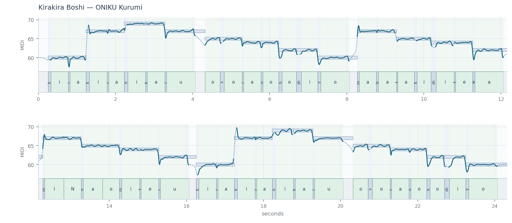
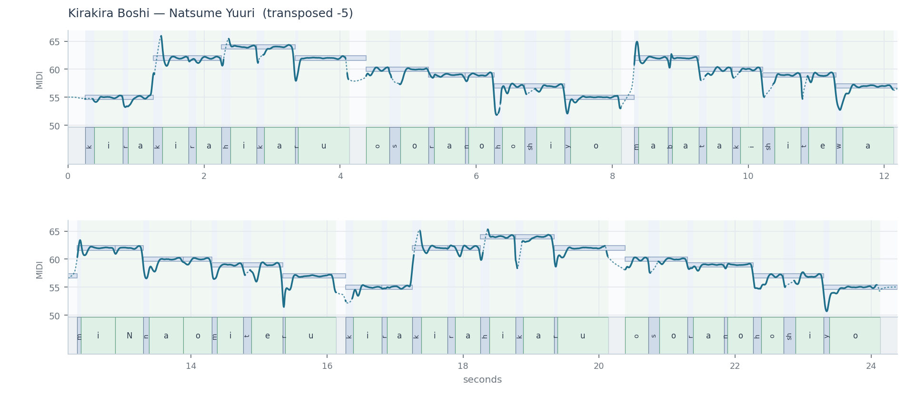
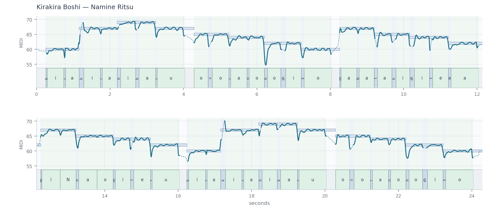
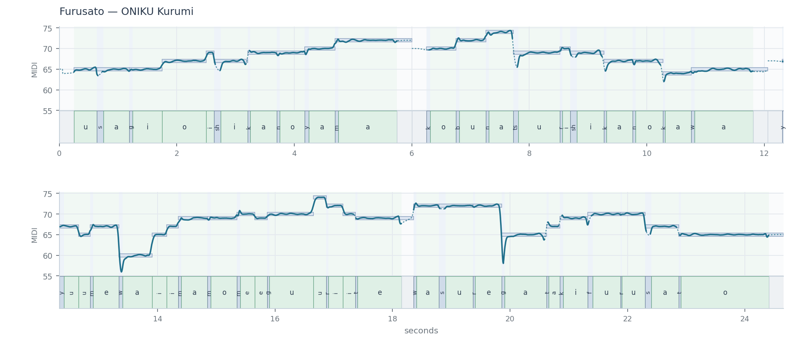
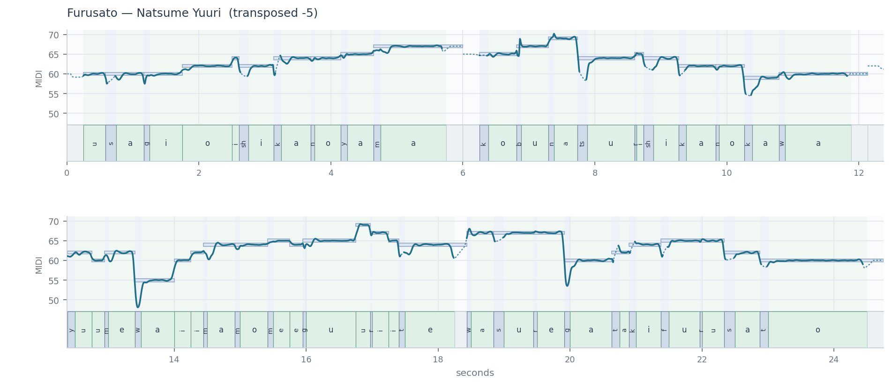
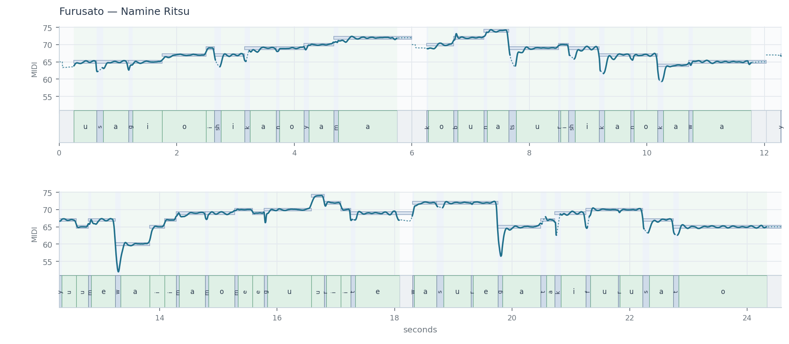
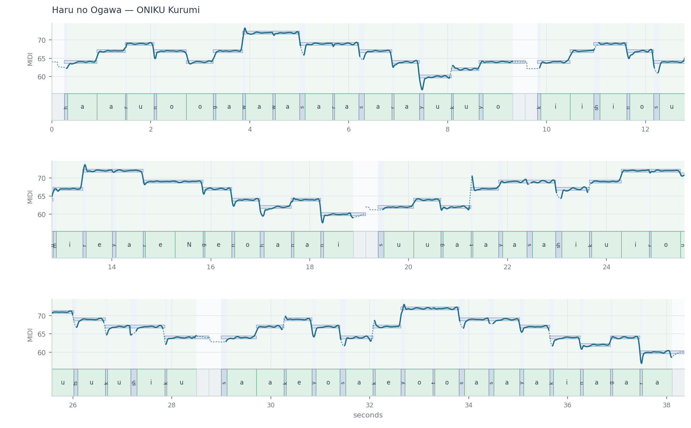
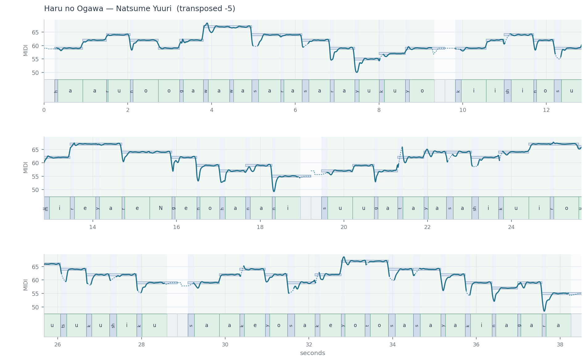
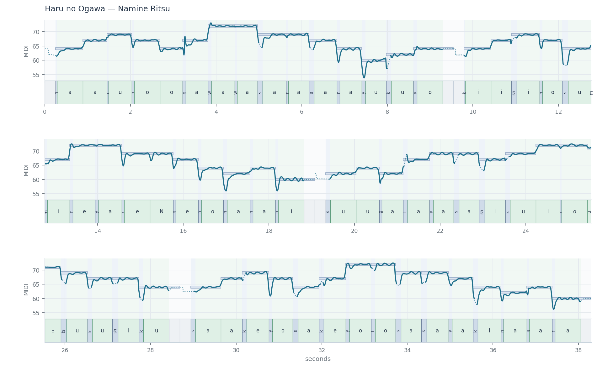
How fast is too fast
One score — the scat chorus of Ievan polkka — at five tempos, sung by Namine Ritsu. Only the tempo changes; the notes and the lyrics are identical. At 400 BPM an eighth note lasts 75 ms, which is the vowel floor, so the whole line is past the point where the written durations fit.
| Tempo | Eighth note | Shortest consonant | Audio |
|---|---|---|---|
| 200 BPM | 150 ms | 23.0 ms | |
| 250 BPM | 120 ms | 22.8 ms | |
| 300 BPM | 100 ms | 22.7 ms | |
| 350 BPM | 86 ms | 30.0 ms | |
| 400 BPM | 75 ms | 30.0 ms |
No consonant falls below 20 ms at any tempo, and the shortest one is longer at 350 and 400 BPM than at 300. Once the floors stop fitting, the span is shared between the phonemes that compete for it by weight, and with the default weights that means the vowel and each consonant come out the same length — so a plosive is not the one that gets crushed.
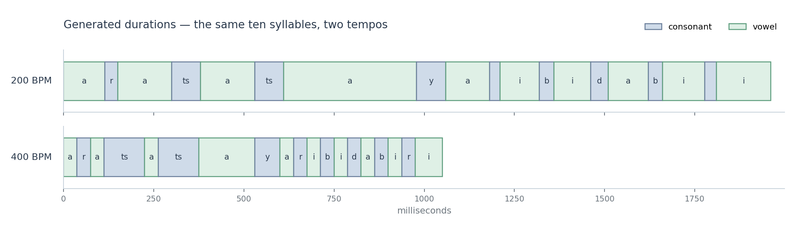
Two knobs at synthesis time
The model does not output one pitch curve. It outputs an expression layer and a vibrato layer separately, so either can be scaled when you synthesize, without retraining and without touching the other. Below: the first phrase of Furusato sung by Namine Ritsu, with both knobs swept over ×0.0, ×0.5, ×1.0, ×1.5 and ×2.0 — 25 clips. At ×0.0 the layer is gone entirely: no expression means the score's pitch with nothing added, no vibrato means a steady tone. Same seed throughout, so the only difference is the scaling.
| vibrato ×0.0 | vibrato ×0.5 | vibrato ×1.0 | vibrato ×1.5 | vibrato ×2.0 | |
|---|---|---|---|---|---|
| expression ×0.0 | |||||
| expression ×0.5 | |||||
| expression ×1.0 | |||||
| expression ×1.5 | |||||
| expression ×2.0 |
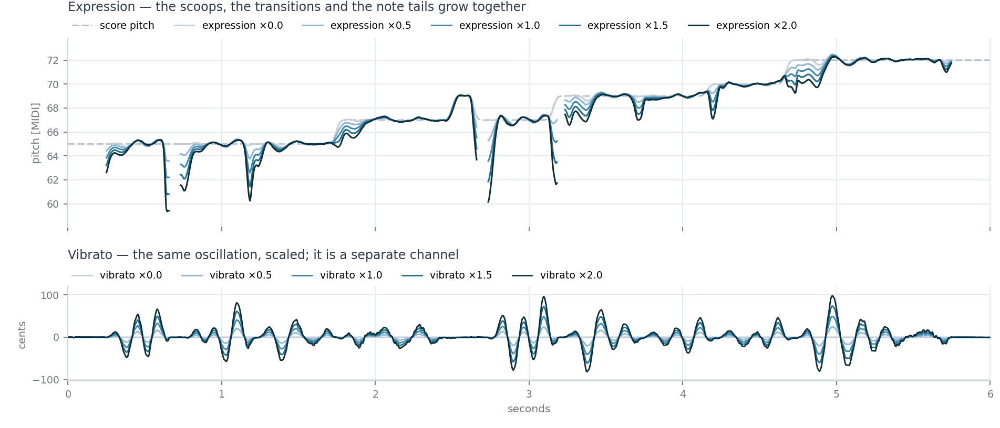
Both are arguments to one call:
render_phrase(ctx, phrase, plain_scale=1.5, vib_scale=0.5). They also accept
a per-frame array instead of a number, so the strength can change over the course of a
phrase — notebooks/03_f0_control.ipynb ramps the vibrato from nothing to
double across a song.
What the F0 model produces
F0 is a sum of three layers in the log domain, plus a voiced/unvoiced channel. The baseline is built deterministically from the note pitches; the model generates the two layers on top of it, so the pitch follows the score while the expression is learned.
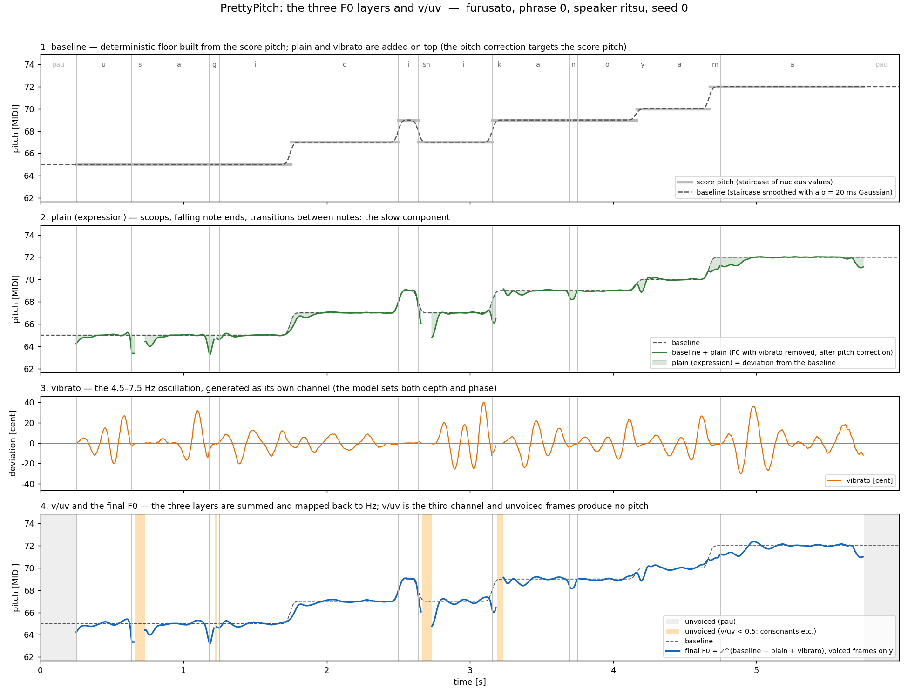
The repository's guide/ directory explains each stage, and the notebooks show
how to change the expression and the vibrato at synthesis time, either as one number for
the whole phrase or as a value that moves through it.